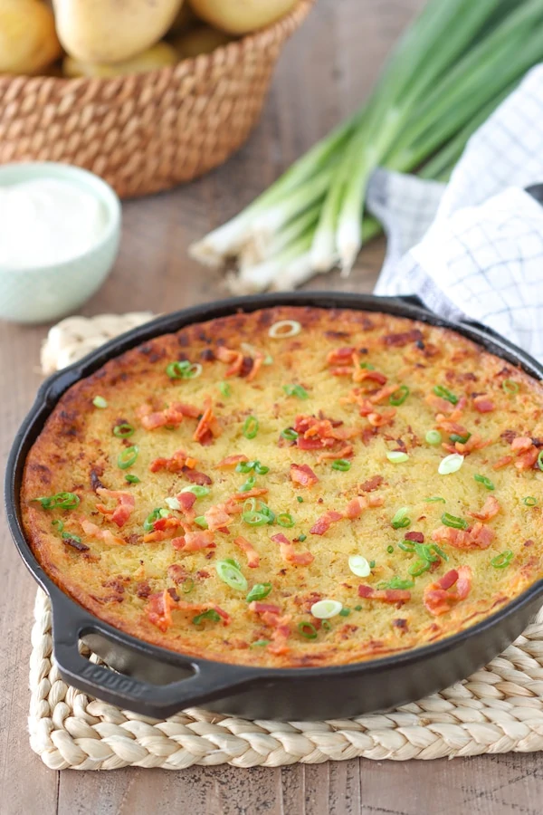

Babka

This hearty Belarusian potato babka is made from grated potatoes, flavored with bacon bits or salt pork and sautéed onions. It’s usually baked into a type of casserole until it’s golden on top and creamy and fluffy in the center.
Ingridients
- potatoes
- onions
- salt pork or bacon
- all purpose flour
- egg
- 3-4 eggs
- sour cream
- salt, ground black pepper
Steps
- Preheat the oven to 350 degrees Fahrenheit.
- In a large bowl, grate the potatoes on the fine holes of a box grater.
- I like to grate 3/4 of each potato on the smallest and finest holes of the box grater and the remaining 1/4 of year potatoes on slightly larger holes of a box grater, but still smaller than the type you would use to grate cheese. I like that it adds just a bit of texture to the Potato Babka. The largest holes of a box grater will be too large to bake through and might still be raw, so you would need to cook the Potato Babka longer. It will also not have the correct texture for a traditional Potato Babka. The potato mixture needs to have a batter consistency.
- I cook the Potato Babka in a 10 inch cast iron skillet, so I cook the onion and bacon in the same skillet first. On medium low heat, cook the bacon until it is golden and crisp. Remove the bacon from the skillet and drain on a plate lined with paper towels. Set aside some of the bacon to serve on top of the Potato Babka after it is cooked.
- Discard most of the bacon grease, saving only 1-2 Tablespoons. Add the onions to the skillet along with the reserved bacon grease and cook on medium heat until the onions are tender and slightly golden around the edges.
- In a large bowl that you used to grate the potatoes, add the sautéed bacon and onions, the egg, flour, 2 Tablespoons of sour cream, salt, ground black pepper. Mix to combine.
- Use a pastry brush to spread the bacon grease up the sides of the cast iron skillet. The bottom should already be greased from when you were sautéing the bacon and onions.
- Pour the potato mixture into the cast iron skillet and even it out. Place into the preheated oven and bacon for about 45 minutes.
- Brush the top of the Potato Babka with some of the remaining bacon grease, melted butter or oil. Some Belarusians even like to spread out a thin layer or sour cream all oven the top of the Potato Babka. This will give it a more golden exterior. Return the Potato Babka to the oven and increase the heat to 450 degrees Fahrenheit. Bake for another 10-15 minutes, until the top is golden brown and the potatoes are completely cooked through.